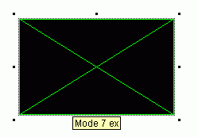
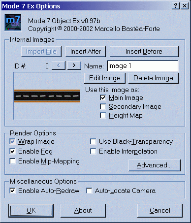
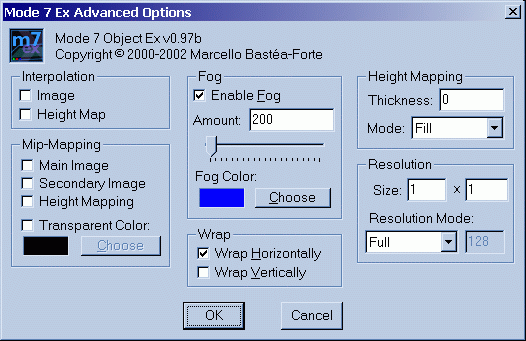

|
Mode 7 ex API Reference: Setup Dialog and Object Options
Double-clicking a mode 7 ex object in the frame editor (as seen on the left) will bring up the main setup dialog.
Mode 7 ex options
Once the dialog opens, you should become aware of several sections for customizing your mode 7 ex object.
(Note: by default your options screen will most likely look different from the screen on the left.)
Internal Images
Internal images allow you to store all you Mode 7 ex images for main surface, secondary surface, and height map internally. You can store up to 200 different images in each Mode 7 ex object. Multiple images can be used to create animations, different levels, or anything you can think of.
- Insert After - creates a new internal image directly after the currently selected image. It then opens up the image editor for the new image
- Insert Before - creates a new internal image at the current image spot, shifting the current image and all images after it. It then opens up the image editor for the new image
- ID #: - displays the ID number of the currently selected image
- < and > - scrolls through the internal images
- Name: - allows you to edit the name of the current internal image for loading-by-name at runtime
- Edit Image - opens the currently select image in the Multimedia Fusion image editor
- Delete Image - deletes the currently selected image
- Use this Image as: - allows you to preselect image usage for the main surface, secondary surface, and height map
Render Options
Render options control how the mode 7 ex render is created and displayed on the screen. Different options will create a different effect, and all options are not necessarily beneficial in all applications.
Several options may be displayed as a grayed check if they have been tweaked in the advanced settings dialog.
- Wrap Image - toggles horizontal and vertical wrap modes
- Enable Fog - with fog enabled, the image will 'fade' out in the distance
- Enable Mip-Mapping - with mip-mapping enabled, the image will be blended into solid color in the distance (helps prevent the moiré effect)
- Use Black-Transparency - with transparency mode enabled, any part of the Mode 7 ex render that is Black (0,0,0) will be displayed as transparent
- Enable Interpolation - interpolation will blend pixels that are close up to create a less blocky render
- Advanced... - options can be tweaked with more control in the advanced setup box
Miscellaneous Options
- Enable Auto-Redraw - Auto-redraw automatically decides when the mode 7 ex surface needs to be redrawn based on changing parameters (it is not recommended to disable auto-redraw)
- Auto-Locate Camera - This option will initialize the camera at a pre-calculated location based on the image specified for the main surface in the Internal Images section. If this option is disabled, the camera is placed at 0,0.
Mode 7 ex Advanced Options
The advanced options screen allows you to fine tune the Mode 7 ex render options.
- Interpolation
- Image - interpolation on main surface
- Height Map - height map/elevation interpolation
- Mip-Mapping
- Main Image - mip-mapping on the main surface
- Secondary Image - mip-mapping on the secondary surface
- Height Mapping - mip-mapping on the height map
- Transparent Color: - the color used in main surface blending
- Fog
- Enable Fog - toggles fog (same as in the normal options screen)
- Amount: - the distance/amount of fog to use (0 is no fog, 50000 is a lot of fog)
- Fog Color: - choose the color of the fog
- Wrap
- Wrap Horizontally - wrap the main image horizontally
- Wrap Vertically - wrap the main image vertically
- Height Mapping - height mapping allows you to use voxels in Mode 7 ex
- Thickness: - the maximum height of voxels (uses the same unit as camera elevation)
- Mode: - controls how 'hidden' pixels are calculated and drawn
- Fast - hidden pixels are ignored and can be seen through
- Fill - a 'slice' is created where hidden pixels would be
- Full - in this mode, the slowest, Mode 7 ex attempts to calculate as many hidden pixels as possible
- Resolution - resolution reduces the quality of the mode 7 ex render for higher speed by breaking it into chunks
- Size: - the size/spacing of each rendered pixel in Mode 7 ex (minimum 1x1, maximum 1000x1000)
- Resolution Mode: - sets the resolution display type specified as a number and an optional parameter
- Quick - draws a single pixel for each rendered pixel
- Full - stretches each rendered pixel to fill the resolution size
- Scanlines - creates horizontal scanlines that only draws the first row of each (use a 2x2 resolution)
- % scanlines - same as scanlines, but with blended lines (takes an opacity parameter of 0-255)
|